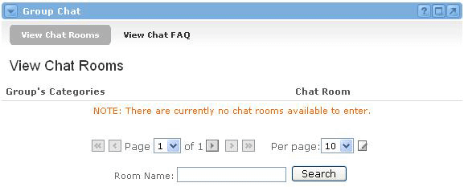
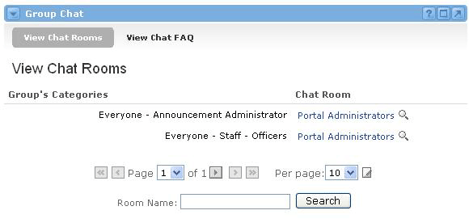
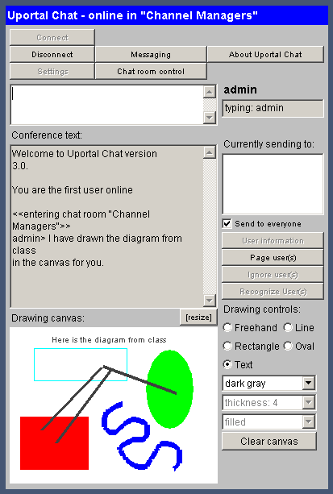
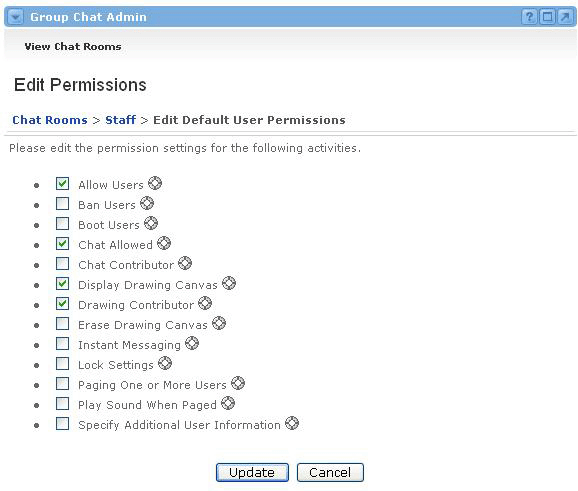

Group Chat Channel
Looking for more help options? Click Here
The Group Chat channel allows users from the Portal community to gather for a real-time chat experience. This takes place inside a virtual chat room, which is launched as a separate window from the Group Chat channel.
Chat rooms are enabled for specific groups of users from within the Group Chat Admin channel. Administrators of the portal community usually perform this task.
Searching for a Chat Room
In order for a user to join a chat room, a user must first locate a chat room that has been enabled for them. If no chat rooms are currently enabled for a particular user, their Group Chat channel will look like this:

If a chat room has been enabled for a user, it will show up in the Group Chat channel upon initial log in. If a chat room becomes enabled while a user is logged in, the user will need to click the Search button to refresh their available chat room list. A user can have more than one chat room available to them at any given time.

Launching the Chat Channel
To launch the chat window, simply click on the name of the chat room.
- A window will open up. It may take a few moments for the components to load in your environment.
- When the chat application loads successfully, you will be connected to the group chat session. Users and groups who are not assigned to this chat room will not be able to login to this chat session.
- To end the chat session, click the Disconnect button or just close the window.

Chat Features
To communicate in the chat window, simply click within the white box towards the top of the window and type. In order for others to see what you have typed, you must hit ENTER after you're done typing.
All chat participants share the Drawing Canvas. Sometimes pictures work better than words, so here you can draw shapes and figures for others to see (if permissions have been enabled). If the canvas becomes too crowded, simply click the Clear canvas button to wipe the slate clean.
You should notice some of the buttons at the top of the chat window. If any of these buttons are grayed out, that means you either do not have permission to use this feature or it is not possible to do this at this time.
- Messaging - This button lists online users and allows you to send instant private messages to any user on the list.
- Settings - This button allows you to change some basic settings, such as sound notification and canvas availability.
- Chat Room Control - This button allows you to invite, ban, or allow any users into the current chat channel.
- About Uportal Chat - This button gives more information about uPortal Chat.
The following buttons can only be used when you have selected an online user from the Currently Sending to: list on the right side of the window (and in some cases, if permissions have been enabled):
- User Information - Click this button to find out more about any selected user.
- Page User(s) -Click this button to send them an alert message.
- Ignore User(s) - Click this button to ignore users. You will no longer see what they type.
- Recognize User(s) - Click this button to disable the ignore setting on any user you are currently ignoring.
The Chat Admin channel allows a portal administrator to set up chat rooms for users within the community. The Chat Admin channel creates chat rooms for selected groups, and is used to define the permissions that each user or group has while in the chat room
Enabling a Chat Room
In order for users to join a chat room, it must first be enabled from within the Chat Admin channel. To do this, follow these steps:
- Locate the Group Chat Admin channel.
- Select the Group for which the chat room will be created.
- Click the + icon next to a group name to expand the list of groups.
- Check the radio button next to the desired group to enable a chat room or edit chat room privileges for that group.
- Click the Submit Selections button at the bottom of the channel.

You will now see a new screen where you will be able to either enable or disable the chat room. To enable it, click the Add icon next to the Disabled label. To disable it, click the Delete icon next to the Enabled label.
Setting Permissions for a Chat RoomAfter enabling a chat room for the first time, the default permissions must be determined.
- The Edit Default User Permissions screen appears, containing a list of permissions.
- Check the box(es) next to any permission setting that users should have by default.
- Uncheck any box(es) for permissions that users should not have by default.
- Click the Update button when finished.

Changing Default Permissions
You will now see that the chat room is listed as Enabled. To change the default user permissions, follow these steps:
- Click the Default User link.
- You can also change an individual user's permissions, by clicking on the Default link next to that user's name.
- If you change a user's individual permissions, they will be listed as Custom in the User Permissions column. To revert any user back to the default permission settings, simply click on the Delete icon in the User Permissions column.

Search in the Chat Admin Channel
If a chat room has been enabled for a group with a large number of users, it is possible to search for a specific user for whom to customize permissions from within the Chat Admin channel. Simply enter all or part of a person's Username, First Name, or Last Name into the appropriate field of the search section, located at the bottom of the Chat Admin channel. Click the Search button to execute the search.